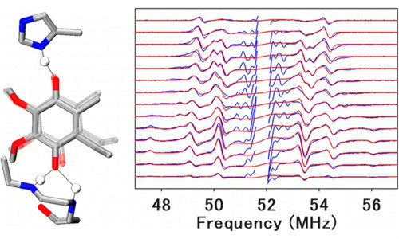

Alexander Taguchi, PhD, Biophysics
My interest lies at the intersection of machine learning and spectroscopy. Magnetic resonance techniques such as Electron Paragmagnetic Resonance (EPR) and Nuclear Magnetic Resonance (NMR) are powerful tools for studying the relationship between protein structure and function. However, spectral analysis is a time consuming process frought with human bias and error. To counter this problem, I work on developing machine learning tools to help spectroscopists tackle some of Nature’s most difficult challenges in protein science.
Learn More